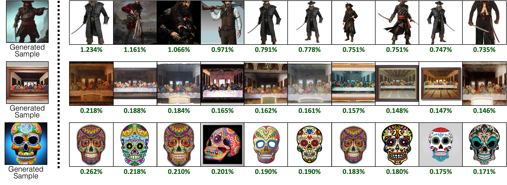

While large text-to-image models are able to synthesize "novel" images, these images are necessarily a reflection of the training data. The problem of data attribution in such models -- which of the images in the training set are most responsible for the appearance of a given generated image -- is a difficult yet important one. As an initial step toward this problem, we evaluate attribution through "customization" methods, which tune an existing large-scale model toward a given exemplar object or style. Our key insight is that this allow us to efficiently create synthetic images that are computationally influenced by the exemplar by construction. With our new dataset of such exemplar-influenced images, we are able to evaluate various data attribution algorithms and different possible feature spaces. Furthermore, by training on our dataset, we can tune standard models, such as DINO, CLIP, and ViT, toward the attribution problem. Even though the procedure is tuned towards small exemplar sets, we show generalization to larger sets. Finally, by taking into account the inherent uncertainty of the problem, we can assign soft attribution scores over a set of training images.
Dataset
We curate our attribution dataset using Custom Diffusion. We create two groups of models: (1) Object-centric models: we finetune each model on an exemplar object instance image of a known class from ImageNet. (2) Artistic style-centric models: we finetune each model on an exemplar style defined by a small image collection. For each model, we use ChatGPT (top) to generate prompts and also generate prompts procedurally with a collection of media or objects (bottom).
Method
We finetune pre-trained image features on our dataset to improve attribution. We use contrastive learning to learn a linear layer on top of an existing feature space. The embedding learns high similarity for corresponding training and synthesized images, in contrast to non-corresponding images from the dataset.
Results
Attributing exemplars. For a given synthesized sample, obtained by training on exemplar image(s) of an acorn squash (top) and paintings by Alfred Sisley (bottom), our fine-tuned attribution method improves the ranking and influence score of the exemplar training image. Exemplar image are in red boxes. Green text is our estimated influence score as percentage assignments over the dataset.
Attributing Stable Diffusion Images. We run our influence score prediction function with CLIP, tuned on our attribution datasets. In each row, we show a generated sample query (Left), and the top attributed training images from the full LAION-400M set (Right). We find that LAION-400M have more images containing a similar concept, and attribution scores are shared more
evenly across such images.

Copy detection results. We investigate our data attribution method when a synthesized image query is a “duplicate” of the training data. We take duplicates found in Somepalli et al., where the images in the red box are the training image matches reported by the authors. We observe that there exist multiple training images from LAION that resemble the query, and the attribution score dropoff (green → orange) is significant between similar images and other images.
We thank Aaron Hertzmann for reading over an earlier draft and for insightful feedback. We thank colleagues in Adobe Research, including Eli Shechtman, Oliver Wang, Nick Kolkin, Taesung Park, John Collomosse, and Sylvain Paris, along with Alex Li and Yonglong Tian for helpful discussion. We appreciate Nupur Kumari for guidance with Custom Diffusion training, Ruihan Gao for proof-reading the draft, Alex Li for pointers to extract Stable Diffusion features, and Dan Ruta for help with the BAM-FG dataset. We thank Bryan Russell for pandemic hiking and brainstorming. This work started when SYW was an Adobe intern and was supported in part by an Adobe gift and J.P. Morgan Chase Faculty Research Award. Website template is from Colorful Colorization.
Citation
@inproceedings{wang2023evaluating,
title = {Evaluating Data Attribution for Text-to-Image Models},
author = {Wang, Sheng-Yu and Efros, Alexei A. and Zhu, Jun-Yan and Zhang, Richard},
booktitle = {ICCV},
year = {2023},
}